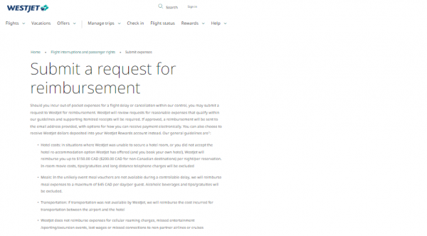

一份入禀卑诗最高法院的诉讼书指称，西捷航空（WestJet）在航班出现延误或被取消时，向受影乘客声称索取的酒店和餐饮等费用的赔偿设有上限金额，乃误导顾客。
航空乘客权益组织（Air Passenger Rights）主席卢卡斯（ Gabor Lukacs）表示：“西捷不像是在利用条例漏洞。在这情况下，他们是公然违反了自2019年起生效的《航空乘客保护条例》（Air Passenger Protection Regulations）”。
他于周二（6日）向法院提出诉讼，要求西捷赔偿因航空公司可控制范围内的因素而导致乘客错过航班的损失。
西捷在发给其中一名乘客的信中称，该公司已收到他因在温哥华酒店住宿的要花费了330.87加元的索偿，但只获批150加元。
诉讼书指西捷在官网上公布的这些赔偿金限额，有违联邦法例和西捷运输合约中规定乘客可享的实报实销权利，而且这是属于“可强制执行的合约权利”。
西捷航空设定的赔偿上限为每人每天膳食补贴45加元，卢卡斯认为，以机场的餐饮消费来说，这是一个不符合实际的金额。

诉讼书指称西捷意图误导乘客，使他们以为在航班受延误的情况下，乘客无权要求补偿手机漫游费用，以及因错过预购了门票的活动或因损失了工资而构成的损失。卢卡斯称，加拿大运输局（Canadian Transportation Agency）在2022年10月7日的一项裁决中已向西捷表明，航空公司不可设定赔偿限额。该项裁决指西捷只向乘客赔偿每晚150加元的酒店住宿费的做法并不恰当，命令其必须支付全额223.42加元。
西捷曾就有关裁决辩称，该公司在向乘客赔偿部分住宿费用时已满足了法例要求，因为西捷被容许设定赔偿上限额为150加元。
然而运输局表示，乘客不受西捷航空的赔偿限额约束，航空公司必须为因受航班延误而需要过夜留宿的乘客提供合理的酒店住宿。
上述诉讼尚未经法庭辩证。
图：加通社
V20